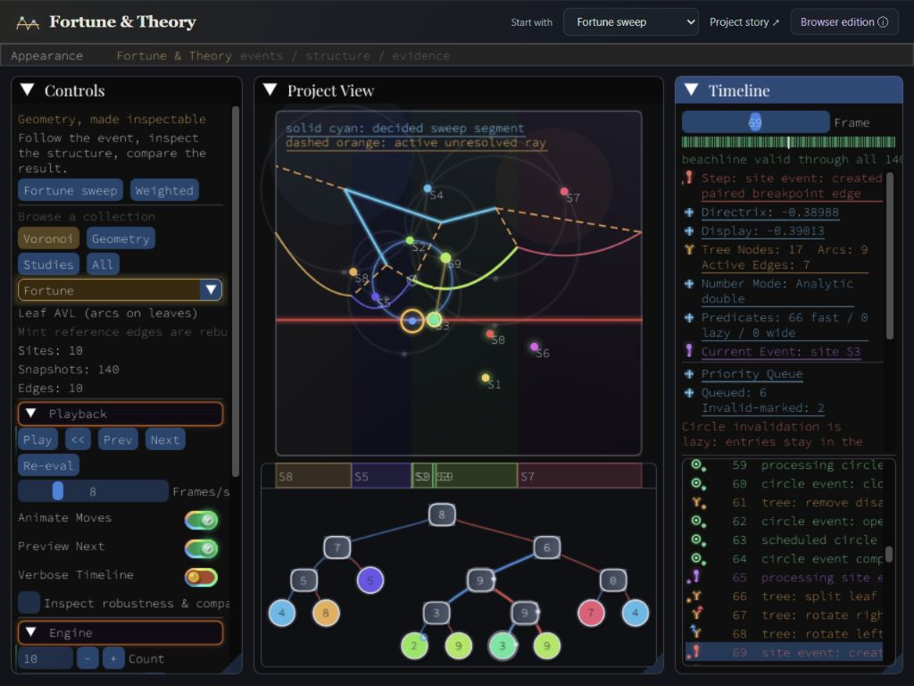

Raw construction / reference
The raw sweep edges remain distinct from the independently clipped final diagram. Reference-final mode can correct the display; it does not prove the sweep succeeded. Their disagreement is a useful result.
C++ · geometry · executable theory
The diagram is the result.
The interesting work happens between events.
A geometry workbench that exposes the changing beachline, the tree beneath it, and the numerical decisions that keep them consistent.
Explore Fortune's sweepRuns in your browser · C++ compiled to WebAssembly

Open the working systemThree entry points
Each route opens a specific setup
in the same workbench.
Arcs split. Neighbors change. A tree rotates. The timeline preserves the intermediate state behind each geometric event.
Inspect the beachlineRings and shared heights expose sensitive ordering decisions. Compare robustness settings, then inspect the first disagreement.
Examine ties & degeneraciesWeights introduce curved bisectors and sites without cells. Inspect an evolving Apollonius construction and its current limits.
Explore weighted diagramsInside the implementation
A beachline has two simultaneous orders: the tree's in-order traversal and its threaded neighbors. Splits, removals and rotations must preserve their agreement.
Different balancing behavior supplies differential evidence. Recorded mutations and structural checks make a mismatch traceable.
Evidence before a polished result
The raw sweep edges remain distinct from the independently clipped final diagram. Reference-final mode can correct the display; it does not prove the sweep succeeded. Their disagreement is a useful result.
Expression graphs retain geometric constructions while predicate views expose numerical evaluation and unresolved decisions. Formula preservation and filtered comparisons do not constitute certified exact arithmetic. This WebAssembly build provides 53-bit double and 113-bit software long double significands; wider evaluation still does not certify geometric predicates.
The weighted-diagram investigation caches analytic pairwise information incrementally. DCEL topology is reassembled globally. It remains an incomplete paper-based construction with explicit numerical fallbacks.
Checked in this edition. The native core test suite and 26 WebAssembly signature groups passed. These checks provide regression evidence for the covered cases; they do not establish correctness for every degeneracy.
The browser edition
The main sweep and weighted-geometry routes are accompanied by selected theory views. This edition does not claim parity with every desktop laboratory.
Origins
The original visualizer joined the moving beachline to its underlying tree. The C++ project expands that idea through multiple backends, recorded mutations and explicit comparisons.
View the earlier Crystal project